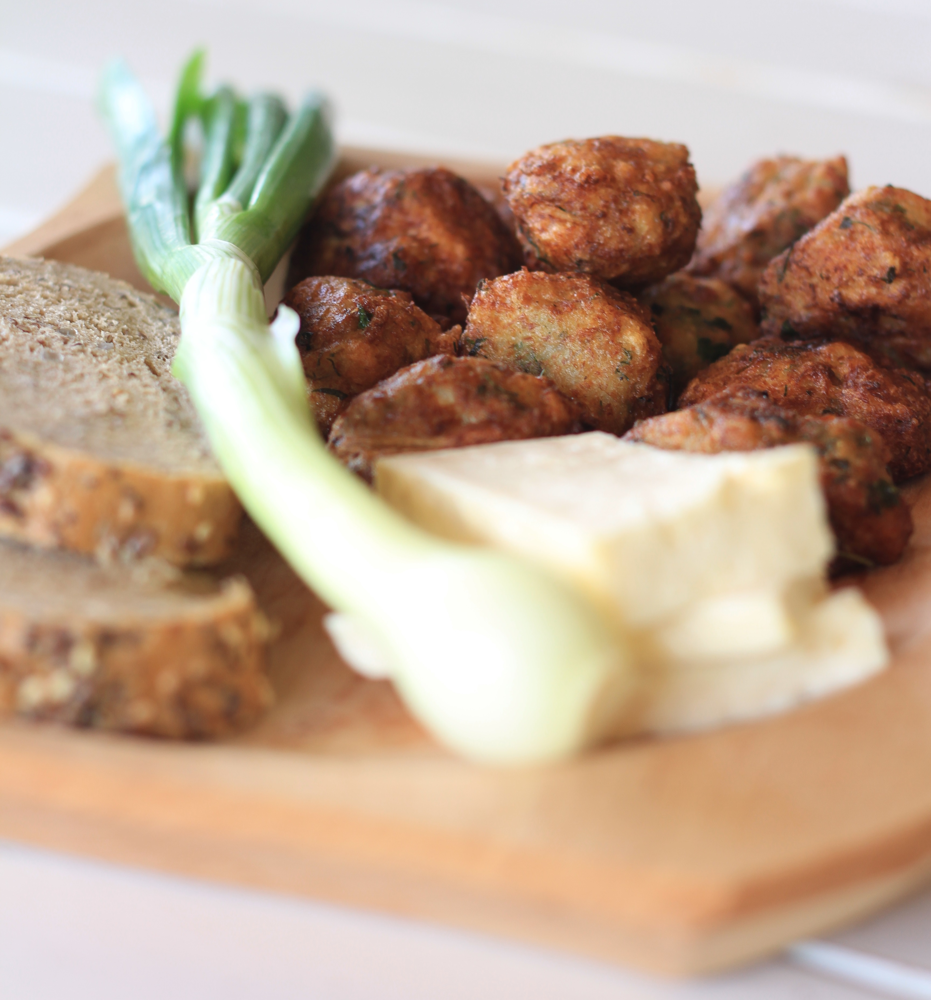

| Acasă | Despre noi | Rețete | Galerie | Comandă aici | Contact |
Rețete pentru bunătăți cu ciuperci
• Ciorbă de burtă falsă cu Ciuperci Pleurotus
Ingrediente: 1kg ciuperci pleurotus, 3 lg ulei, o ceapă roșie, 5 căței de usturoi, 2 morcovi, 2 gogoșari murați în oțet, 100 ml oțet, 2 l apă, 3 gălbenușuri, 500 ml smântână, sare, piper.Mod de preparare: În oala în care urmează să faceți ciorba, încingeți uleiul, căliți ceapa și usturoiul trecut prin presă cu puțină sare. Adăugați morcovii și gogosarii. După 5-6 minute, adăugați apa și sare, piper după gust. După ce morcovii sunt fierți, adăugați ciupercile pleurotus tăiate fâșii, iar când acestea devin moi adaugați gălbenușurile amestecate cu smântâna. |
• Ciuperci Pleurotus cu sos de vin alb
Ingrediente: 1 kg ciuperci pleurotus, 5 fire ceapă verde, 200 ml vin alb, 400 ml smântână(opțional), 3 căței usturoi, pătrunjel, sare, piper, boia de ardei, ulei de măsline.Mod de preparare: Se taie ciupercile (fâșii), ceapa verde și usturoiul, apoi le adăugați, pe rând, într-o tigaie cu ulei încins. După ce se călesc la foc mic, se toarnă smântâna, vinul alb și se condimentează cu sare, piper și boia de ardei. După încă 5 minute de fiert la foc mic, puteți presăra deasupra verdeață. Se pot servi simple, ca sos pentru paste sau ca garnitură. |
• Ciuperci Pleurotus la tigaie cu ceapă verde, usturoi și mămăliguță
Ingrediente: Ciuperci Pleurotus, ceapă verde, usturoi, ulei, sare, piper.Mod de preparare: Ciupercile se taie fâșii și se pun în tigaie cu cateva linguri de ulei, urmând să le căliți până se înmoaie. Ceapa verde și usturoiul se taie rondele, apoi le adăugați peste ciuperci și le lăsați până se prăjesc puțin. Condimentati cu sare și piper și le puteți servi cu mujdei țărănesc și mămăliguță. Pofta bună! |
• Chiftele cu Ciuperci Pleurotus
|  |
Ingrediente: 1 kg ciuperci curatate (fierte și scurse bine), 2 cartofi mari, un morcov, 4 căței de usturoi, pătrunjel, mărar, sare, piper, ulei, pesmet, făină.Mod de preparare: Fierbeți cartofii și morcovul, apoi îi blenduiți. Într-un bol, amestecați ciupercile trecute prin mașina de carne, legumele pasate, verdeața tocată, cateii de usturoi pisati, sarea și piperul. Omogenizați și adaugați cele 4 linguri de pesmet/faină. Compoziția trebuie lăsată la rece timp de 20 de minute. Modelați biluțe rotunde, le dați prin făină și le planjați în uleiul încins. |
• Burger vegetarian
Ingrediente: 350g (4 căni) ciuperci tocate, 1 conserve (400g | 14 oz) fasole, orice fel 1 ceapă, tăiată cubulețe 15 g (¼ cană) pătrunjel proaspăt, tocat 2 catei de usturoi, macinati 4 linguri pesmet 1 lingura coji de psyllium sau seminte de in macinate 1 lingura de cimbru 1 lingurita coriandru, macinat ulei, pentru prajit sare de mare si piper macinat, dupa gustMod de preparare: Puneți ciupercile și fasolea tocate grosier într-un robot de bucătărie sau într-un blender. Amestecați împreună. Puneti compozitia intr-un bol si adaugati restul ingredientelor pentru chiftelele burger cu ciuperci. Se amestecă bine folosind o furculiță.Încinge puțin ulei într-o tigaie mare, antiaderentă și adaugă chiftelele, una câte una. Prăjiți-le ușor pe ambele părți, până capătă o crustă frumoasă. Mutați-le pe un prosop de hârtie. Asamblați burgerii cu ciuperci. Întindeți un strat de maioneză vegană și ketchup pe chiflele tăiate în jumătate. Adăugați salată verde, niște roșii, ceapă și felii de murături, burgerul cu ciuperci și gata! Savurează un burger vegan cu ciuperci delicios! |
• Brioșe cu ciuperci și cașcaval
 |
Ingrediente: 1 ciuperci intregi 280g, 300 g faina, 300 g lapte batut, 100 g cascaval, 80 g unt topit, 10 g praf de copt, 2 fire ceapa verde, 1/2 legatura patrunjel, 1 lingurita boia, 1 ardei copt, 1 ou, sare, piper.Mod de preparare: Ce-mi place la reteta de briose cu ciuperci este faptul ca se face foarte repede. Doar caut prin frigider, vad ce ingrediente am disponibile si in maxim 10 minute compozitia e gata de pus in tava. De acesta am ales sa folosesc ciuperci ca leguma principala. Le-am ales pe cele de la Bonduelle pentru ca sunt deja gatite, au o culoare frumoasa si sunt foarte bune la gust. Pe langa acestea, am mai pus ardei copt, ceapa verde si patrunjel. Nu puteam sa nu pun si cascaval, fiind o reteta de briose aperitiv. Puteti pune orice fel de branza care se topeste frumos, chiar si mozzarella. |